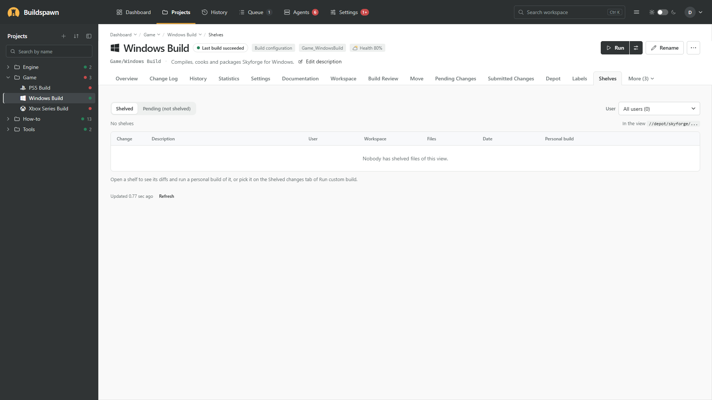

Perforce shelves and personal builds
Build a shelved change on top of the latest code before it reaches the depot.
When to use it
A shelf (shelved changelist) holds files someone has not submitted. A personal build syncs the latest code, puts the shelf on top and runs the steps. It tells the author whether the change works before it breaks the main line. It does not change the status of the build configuration or its last successful build.
How to set it up
Build a shelf by hand
- Open the build configuration and click the arrow beside Run to open the Run dialog.
- Open the Shelved changes tab.
- Tick one or more shelves, or type the numbers in Shelved changelist IDs, separated by commas, for example
16, 17. Empty means a regular build. - Click Run Build.

The build unshelves each change in the order given after the sync (p4 unshelve) and merges what is older than the head (p4 resolve -am). A conflict fails the build and names the files. The build is marked Personal.
Build every new shelf
- Open Settings › Triggers, click Add new trigger and add Perforce shelve trigger.
- Fill in the fields below and click Save.
| Field | What it does |
|---|---|
| Schedule | How often to look for new shelves, in cron syntax, for example H/2 * * * *. Empty means only when a Perforce trigger calls Buildspawn. |
| Keyword | Only changelists whose description contains this text, for example #buildspawn. Required unless a description pattern or users are set. |
| Description pattern | A regular expression the description must match. Empty means any. |
| Users | Perforce users whose shelves count, separated by spaces or commas. Empty means everyone. |
| Build customization | Start every build clean, and give name=value parameters, one per line. Names that start with p4. belong to Buildspawn. |
Only files in the build configuration's workspace view count. Each new revision of a matching shelf starts one personal build. Shelves that exist when the trigger starts, or when you change its filters, wait for their next revision.
The Shelves tab
The Shelves tab lists shelved changelists in the view, with a switch between Shelved and Pending (not shelved), a user filter, and the columns Change, Description, User, Workspace, Files, Date and Personal build. Search by number, user, workspace or description. A shelf page shows its files and diffs. Lists show their age and have a Refresh button. If the list is cut, it says Showing N of M shelved changes; type any other number in the field.
Review status with Swarm
- Changelist and shelf pages show the review a change belongs to.
- The job property Publish build status to Helix Swarm posts the result to the review as a test, and optionally also as a comment. Create Swarm test needs a Swarm administrator; otherwise you make the test in Swarm by hand, with the Base64 of a Buildspawn user and API token that may build the configuration. Add Swarm servers in the system settings.
- The Build Review tab starts a build for a review by hand, with the review, change, status and the pass, fail and update addresses. Swarm usually does this for you. The build then has
P4_REVIEWandP4_REVIEW_TYPE.
A worked example
An artist changes a material, runs p4 shelve -c 48790 and writes #buildspawn in the description. The shelve trigger on Windows Build sees it within two minutes and starts personal build #212. The artist reads the result and submits.
What you see when it runs
The build has a Personal chip. Summary shows p4.status = shelved, p4.review with the changelist, and the shelf and owner. Changes lists the shelved changelist. The shelf's Personal build column links back.
Problems and fixes
| You see | What to do |
|---|---|
| My shelf is not listed | Only shelves with files in the view are shown. Check the view, then click Refresh. |
| The build fails before the steps and names files | The shelf conflicts with newer submits. Update, resolve, shelve again and run a new build. |
| The trigger did not build | Check the keyword and users. An older shelf needs a new revision. |
| A chosen build machine is offline | The build waits a few minutes, then is cancelled. |